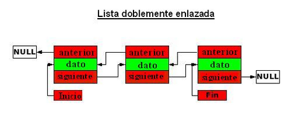

Listas Doblemente Enlazadas
En el ámbito de las ciencias de la computación, una lista enlazada es una estructura de datos clave que se puede utilizar para crear otras estructuras. Está compuesta por una serie de nodos que almacenan datos y uno o dos enlaces, referencias o punteros al nodo anterior o siguiente. La principal ventaja de las listas enlazadas en comparación con los vectores tradicionales es que el orden de los elementos enlazados puede diferir del orden en que se almacenan en la memoria o en el disco, lo que permite que el recorrido de la lista sea distinto al orden de almacenamiento. (Delta PC, s.f.)
Las listas doblemente enlazadas son estructuras de datos similares a las listas enlazadas simples, y la memoria se asigna durante la ejecución. A diferencia de las listas enlazadas simples, en las listas doblemente enlazadas la conexión entre los elementos se realiza mediante dos punteros: uno que apunta al elemento anterior y otro que indica el siguiente. El puntero que apunta al elemento anterior del primer nodo debe señalar a NULL, marcando así el inicio de la lista, mientras que el puntero siguiente del último nodo también debe apuntar a NULL para indicar el final de la lista. (Biblia del Programador, 2014)
Para acceder a un elemento, se puede recorrer la lista en ambas direcciones:
- Desde el inicio, el puntero siguiente facilita el desplazamiento hacia el próximo elemento.
- Desde el final, el puntero anterior permite regresar al elemento previo
class NodoDoble {
int dato;
NodoDoble anterior, siguiente;
public NodoDoble(int dato) {
this.dato = dato;
this.anterior = this.siguiente = null;
}
}
class ListaDobleEnlazada {
NodoDoble cabeza;
public void agregar(int dato) {
NodoDoble nuevo = new NodoDoble(dato);
if (cabeza == null) {
cabeza = nuevo;
} else {
NodoDoble actual = cabeza;
while (actual.siguiente != null) {
actual = actual.siguiente;
}
actual.siguiente = nuevo;
nuevo.anterior = actual;
}
}
public void mostrar() {
NodoDoble actual = cabeza;
while (actual != null) {
System.out.print(actual.dato + " <-> ");
actual = actual.siguiente;
}
System.out.println("null");
}
}
public class ListaDobleEjemplo {
public static void main(String[] args) {
ListaDobleEnlazada lista = new ListaDobleEnlazada();
lista.agregar(1);
lista.agregar(2);
lista.agregar(3);
lista.mostrar();
}
}
Delta PC. (s.f.). Java: Listas enlazadas simples. Delta PC. Recuperado de https://www.deltapci.com/java-listas-enlazadas-simples/
Biblia del Programador. (2014). Listas simplemente y doblemente enlazadas. Biblia del Programador. Recuperado de https://www.bibliadelprogramador.com/2014/04/listas-simplemente-y-doblemente.html?m=0